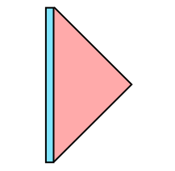
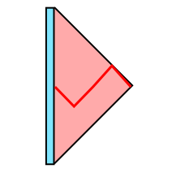
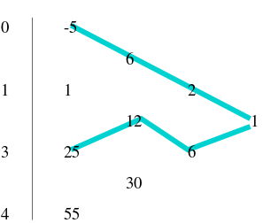
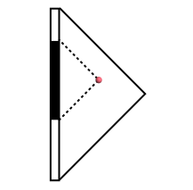
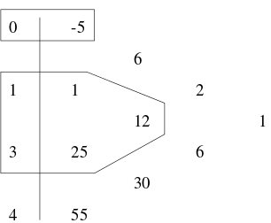
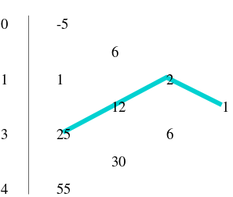
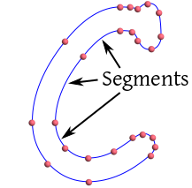

| Last updated on: THU FEB 27 IST 2020 |
EXAMPLE: Suppose that $f(x)$ is a polynomial of degree 2 with $f(1) = 2,$ $f(2) = 5,$ and $f(4) = 2.$ Find the formula of $f(x).$
SOLUTION: Since $f(x)$ has degree 2, it must be of the form $$f(x) = a + b x + c x^2,$$ where the coefficient $a,b,c$ are to be determined. Since $f(1)=2,$ $$2 = a + b\times 1 + c\times 1^2 = a+b+c.$$ Similarly, we get two other equations: $$\begin{eqnarray*} 5 & =& a+2b+4c\\ 2 & =& a+4b+16c \end{eqnarray*}$$ Solving all the three equations together we get $a=-4,b=15/2,c=-3/2.$
In this example we say that $f$ interpolates the three points
$$(1,2), (2,5) \mbox{ and }(4,2).$$
We also call $f$ an interpolating polynomial for this set of 3 points.
Here we see that there is exactly one polynomial of degree 2 that
interpolates these 3 points. A polynomial of degree 2 has 2+1=3 unknown
coefficients, $a,b$ and $c.$ We solved for these from the 3 equations.
This can be generalized to the following
result.
Proof: The conditions $$f(x_i) = y_i \mbox{ for }0\leq i\leq n$$ can be written as a linear system in terms of the coefficients of the polynomial: $$ V \bb = \y, $$ where $\bb = (b_0, b_1,...,b_n)'$ is the vector of coefficients to be determined, $\y = (y_0,...,y_n)$ and $$ V = \left[\begin{array}{ccccccccccc} 1 & x_0 & x_0^2 & \cdots & x_0^n\\ 1 & x_1 & x_1^2 & \cdots & x_1^n\\ \vdots & \vdots & \vdots & \vdots & \vdots\\ 1 & x_n & x_n^2 & \cdots & x_n^n \end{array}\right]. $$ One may check by induction that $V$ has determinant $$|V| = \prod_{i> j} (x_i-x_j).$$ Since the $x_i$'s are all distinct, this implies that $V$ is nonsingular, completing the proof. By the way, $V$ is an important matrix that is useful elsewhere also. It is called a Vandermonde matrix. [QED]
In this page we shall learn to solve the following problem:Given $(n+1)$ points $(x_0,y_0),...,(x_n,y_n),$ how to find the unique interpolating polynomial $f(x)$ with degree $\leq n?$We shall always assume that the $x_i$'s are distinct. (Why is this a natural assumption?) One possible way is to imitate the proof of the above theorem, and solve a linear system of $n+1$ equations in $n+1 $ unknowns. But this is not efficient, because it fails to take into account the Vandermonde structure of the coefficient matrix. We shall now learn some simpler ways of finding $f(x).$
EXAMPLE: Can you quickly write down a nonzero polynomial that vanishes at $1$, $3$ and $100?$
SOLUTION: Typically the simplest answer to flash across our minds, is $(x-1)(x-3)(x-100).$ You can also multiply this with any other polynomial to get another answer. Indeed, all answers may be obtained in this way.
Lagrange started with this simple idea, and extended it to the following problem.
EXAMPLE: Same problem as before, but now with the two extra conditions: $f$ must have degree $\leq 3$ and also $f(50)=1.$
SOLUTION: Since we still need $f$ to vanish at $1,$ $3$ and $100,$ we must start building from $(x-1)(x-3)(x-100).$ This already has degree $3.$ So no further growth is allowed. We can only multiply it with some constant. At $x=50$ this has value $(50-1)(50-3)(50-100).$ To bring it down to $1,$ we have to divide it by this to get the unique answer: $$f(x) = \frac{(x-1)(x-3)(x-100)}{(50-1)(50-3)(50-100)}.$$
This motivates the definition of Lagrangian polynomial s. If $x_0,...,x_n$ are any $n+1$ distinct numbers,
then for $i=0,1,...,n,$ the $i$-th Lagrangian polynomial is
defined as
$$L_i(x) =
\frac{(x-x_0)\times\cdots\times(x-x_{i-1})\times(x-x_{i+1})\times\cdots\times(x-x_n)}
{(x_i-x_0)\times\cdots\times(x_i-x_{i-1})\times(x_i-x_{i+1})\times\cdots\times(x-x_n)}.$$
Here the numerator is the product of all terms of the form $(x-x_j)$ for
$j\neq i.$ The denominator is the same as the numerator, except that $x$ is
replaced by $x_i.$
EXERCISE:
Show that $L_i(x)$ is the unique $\leq n$ degree polynomial with $L_i(x_i) = 1$
and $L_i(x_j) = 0$
for all $j\neq i.$
EXAMPLE: Consider the following $x_i$'s: $x_0=1$, $x_1=3$ and $x_2=-2.$ Find the Lagrangian polynomials.
SOLUTION: Here $$\begin{eqnarray*} L_0(x) & =& \frac{(x-3)\times(x-(-2))} {(1-3)\times(1-(-2))}\\ & =& (6+x - x^2)/6. \end{eqnarray*}$$ Similarly, check that $$L_1(x) = (x^2+x-2)/10,$$ and $$L_2(x)= (x^2-4x+3)/15.$$ Observe that this example does not mention the $y_i$'s at all, since they are not required to compute the $L_i$'s.
Proof: It is easy to see why this $f(x)$ answers our need. At $x=x_i$ $$\begin{eqnarray*} f(x_i) & =& y_0 L_0(x_i) + y_1 L_1(x_i) +\cdots+ y_n L_n(x_i)\\ & =& y_0 \times 0 + y_1 \times 0 +\cdots+y_i\times 1+\cdots+ y_n \times 0\\ & =& y_i \end{eqnarray*}$$ [QED]
EXAMPLE: Let us apply Lagrange interpolation to the following table:
i xi yi 0 1 12 1 3 10 2 -2 -15We have already computed the polynomials $L_0, L_1$ and $L_2.$ So the unique degree 3 interpolating polynomial is $$\begin{eqnarray*} f(x) & =& y_0L_0(x)+ y_1L_1(x)+ y_2L_2(x)\\ & =& 12(6+x - x^2)/6 + 10(x^2+x-2)/10 - 15(x^2-4x+3)/15\\ & =& -2x^2+7x+7. \end{eqnarray*}$$
EXERCISE: Find the interpolating polynomial for the following points using Lagrange's method.
i xi yi 0 1 0 1 3 -1 2 -2 3 3 0 100
EXAMPLE: Show that $$L_0(x)+L_1(x)+\cdots+L_n(x) = 1.$$ Let $f(x)$ denote the left hand side. Notice that it is the Lagrangian interpolating polynomial if $$y_0=y_1=\cdots=y_n=1.$$ Thus $f(x)$ is a polynomial of degree $\leq n$ interpolating the $(n+1)$ points $$(x_0,1),...,(x_n,1).$$ Now consider the constant polynomial $$g(x)\equiv 1.$$ It is a polynomial of degree $\leq n$ that interpolates the same $(n+1)$ points.
Since there is exactly one polynomial of degree $\leq n$ interpolating $(n+1)$ given points, we must have $$f(x)=g(x),$$ that is, $$L_0(x)+L_1(x)+\cdots+L_n(x) = 1.$$
x0 f[x0]
f[x1,x0]
x1 f[x1] f[x2,x1,x0]
f[x2,x1]
x2 f[x2]
We compute this table starting from the left and proceeding toward
right.
EXAMPLE: Consider these values:
xi 0 1 3 4 yi -5 1 25 55Compute the divided difference table for it. SOLUTION:
0 -5
6
1 1 2
12 1
3 25 6
30
4 55
For instance, the 6 at the top of the $3^{rd}$ column is obtained as
$$6 = \frac{1-(-5)}{1-0}.$$
The last 1 is computed as
$$1 = \frac{6-2}{4-0}.$$
EXERCISE: Compute the divided difference table for the following points.
i 0 1 2 3 4 xi 2 3 -2 1 0 yi 22 -12 4 5 5
The following J code will help you explore these. You may need
to load'trig' (if you have not already writted it in
your startup.ijs) in order to use sin:
d=: dyad : '(x}.y) - (-x)}. y' x=: 0.1 0.2 0.4 0.45 0.6 0.7 0.72 0.9 y=: sin 0.1 0.2 0.4 0.45 0.6 0.7 0.72 0.9 y0=:y y1=:(1 d y0) % (1 d x) y2=:(1 d y1) % (2 d x) y3=:(1 d y2) % (3 d x) y4=:(1 d y3) % (4 d x) y5=:(1 d y4) % (5 d x) y6=:(1 d y5) % (6 d x) y7=:(1 d y6) % (7 d x) ]tab=: |: y,y1,y2,y3,y4,y5,y6,:y7
EXAMPLE: Consider the divided difference table constructed in the last example.
0 -5
6
1 1 2
12 1
3 25 6
30
4 55
Look at the numbers along the ``north-east edge'' (shown in blue in the table):
$$-5, 6, 2, 1.$$
These are
$$f[x_0],f[x_1,x_0],f[x_2,x_1,x_0],f[x_3,x_2,x_1,x_0],$$
respectively.
These are the divided differences we shall need in Newton's fundamental
formula. Apply the formula to see that the required interpolating
polynomial
is
$$f(x) = -5+6x+2x(x-1)+x(x-1)(x-3) = x^3+6x^2+7x-5$$
Though we used only the ''north-east edge'', we indirectly used the entire table, because we need all the
entries in the table to compute the final 1 in the table.
Here is some J code to implement the idea.
nx=: 0.5
c=:{. tab
terms=: 1,}: */\ nx-x
+/ c * terms
EXERCISE:
Find the interpolating polynomial for the table for which we had already
used Lagrange's method earlier. Do you get the same answer? You should!
|  |
|---|
| The blue part has the $x_i$'s, the red part has the divided differences. |
|  |
|---|
| A path |
EXAMPLE: Here are two paths.
|  |
|---|
EXERCISE:
Draw three other paths for the above table. How many such paths are
there in all?
|  |
|---|
| Shadow of the red ball is the set of all the $x_i$'s in the black stretch |
EXAMPLE: Here is a numerical example of an shadow.
|  |
|---|
Now we shall mention a strange fact involving
paths and shadows:
EXAMPLE: Here is the same divided difference table once again.
|  |
|---|
| Number | $25$ | $12$ | $2$ | $1$ |
|---|---|---|---|---|
| Shadow | $ \{3\}$ | $ \{1,3\}$ | $ \{0,1,3\}$ | $\{0,1,3,4\}$ |
grow=: 4 : 'if. x=0 do. y,>:>./y else. y,<:<./y end.'
]v=:? 7#2
]pos=:;/(+/\.v,0),.i.8
pos{tab
]shdw=:}:grow/(|.v),+/v
terms=:1,nx-shdw{x
+/ (pos{tab) * */\terms
PROJECT:
Prove this strange fact rigourously. [Hint: The following properties of divided differences may help.]
EXERCISE:
Show that $f[x_0,x_1] = f[x_1,x_0].$
EXERCISE:
Let $\pi$ be any permutation of $\{0,1,...,k\}.$ Then show that
$$f[x_0,x_1,...,x_k] = f[x_{\pi(0)},x_{\pi(1)},...,x_{\pi(k)}].$$
EXERCISE:
Let $x_0,...,x_n$ be distinct real numbers with $a =
\min\{x_i\}$ and $b = \max\{x_i\}.$
Let $f:[a,b]\rightarrow\RR$ be an function differentiable $n$
times. Then
$$
f[x_0,...,x_n] = \frac{f^{(n)}(\xi)}{n!}
$$
for some $\xi\in(a,b).$
EXERCISE:
Show by direct computation that, for any $x\neq x_0,x_1$ and
any function $f,$
$$f(x) = f[x_0]+(x-x_0)f[x_1,x_0]+(x-x_0)(x-x_1)f[x,x_1,x_0].$$
Proof:Use induction.[QED]
EXERCISE:
Prove by induction that Newton's divided difference
interpolation formula holds.
|  |
|---|
| The letter C from the MS Comic Sans font |
| $i$ | 0 | 1 | $\cdots$ | $n$ |
|---|---|---|---|---|
| $x_i$ | $x_0$ | $x_1$ | $\cdots$ | $x_n$ |
| $i$ | $y_0$ | $y_1$ | $\cdots$ | $y_n$ |
EXAMPLE: Consider the following table.
| $i$ | 0 | 1 | 2 | 3 |
|---|---|---|---|---|
| $x_i$ | $0.0$ | $0.5$ | $1.0$ | $1.5$ |
| $g(x_i)$ | $0$ | $0.4794$ | $0.8415$ | $0.9975$ |
| $0.0$ | $0.0000$ | |||
|---|---|---|---|---|
| $0.4794$ | ||||
| $0.5$ | $0.4794$ | $-0.1174$ | ||
| $0.3620$ | $-0.0886$ | |||
| $1.0$ | $0.8415$ | $-0.2060$ | ||
| $0.1560$ | ||||
| $1.5$ | $0.9975$ |
\noindent{\bf Note:} Two numbers, $a$ and $b,$ are said to be equal up to
$k$ decimal places if
$$|a-b| < 5\times10^{k+1}.$$
EXERCISE:
Use the table above to approximate $g(-1.0)$ and $g(2.0).$ Compare your
estimates with the actual values: $g(-1.0) = -0.8415$ and
$g(2.0) = 0.9093.$ Are these approximations as accurate as in the example
above? Why?
EXERCISE: Approximate $h(0.75)$ based on the following values.
| $i$ | 0 | 1 | 2 | 3 |
|---|---|---|---|---|
| $x_i$ | $0.0$ | $0.1$ | $0.2$ | $0.3$ |
| $h(x_i)$ | $1.0000$ | $0.9950$ | $0.9801$ | $0.9553$ |